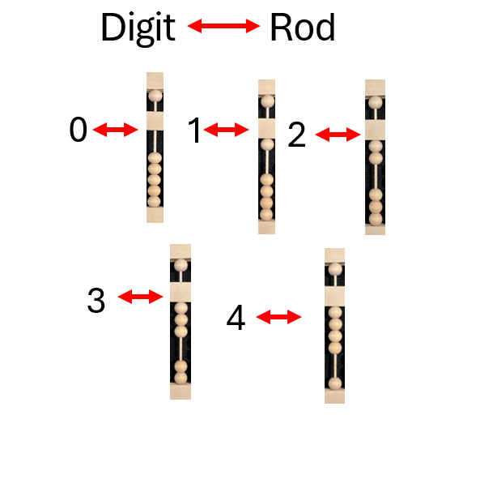
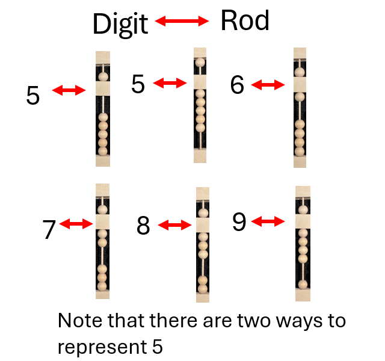
Representing numbers with a counting frame
Representing numbers with an abacus
One operates an abacus by sliding the beads up and down the rods. Numbers can be represented on the rods with the beads. The position of the beads on a rod most often correspond to a Hindu-Arabic numeral, these make up the digits of a number when read left to right. Which numeral or digit the rod corresponds to can be determined by counting the active beads from top to bottom on a single rod, from the upper deck to the lower deck. Beads are active when they are touching the middle bar or touching a bead that is touching the middle bar.
Adjacent rods from left to right together represent the digits of a base-10 number. The bead in the upper deck counts for five of the beads directly below it in the lower deck. A lower bead usually counts for ten of the beads on the rod directly to right of it.
123,456,789 on rods
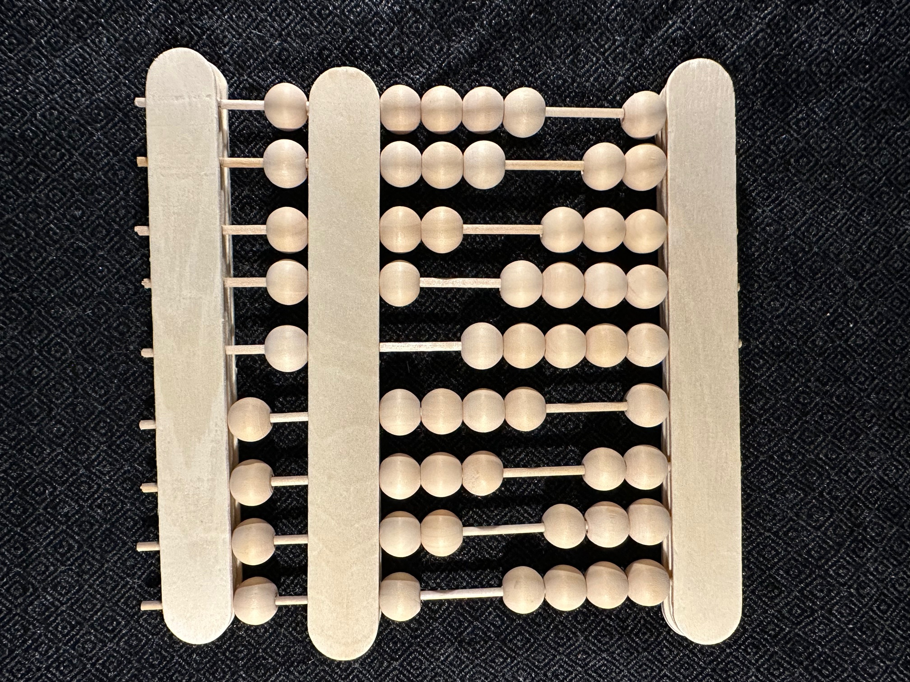
200 on rods
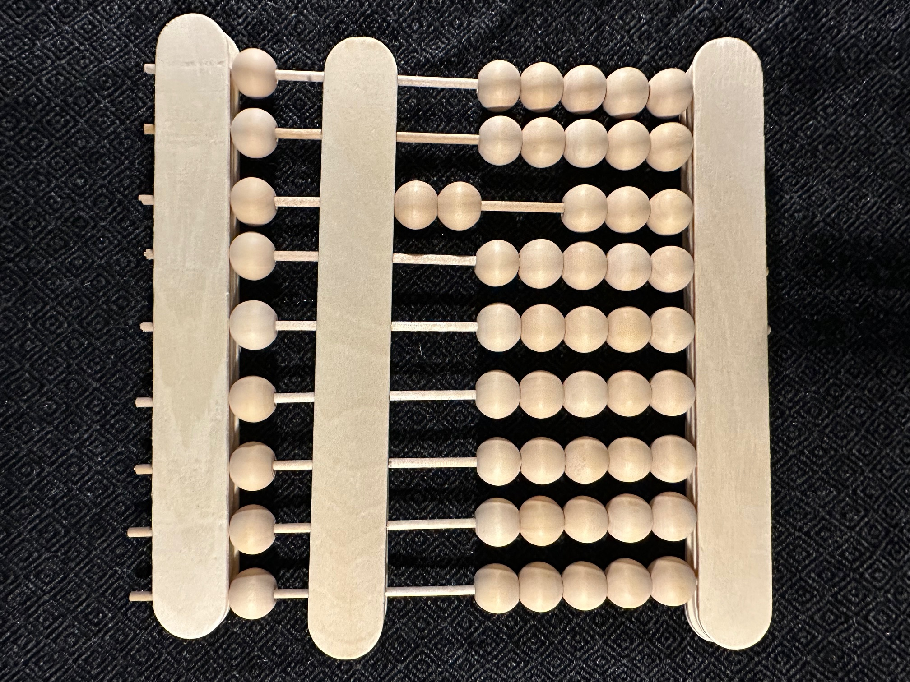
0 on rods, also a blank or “cleared” abacus
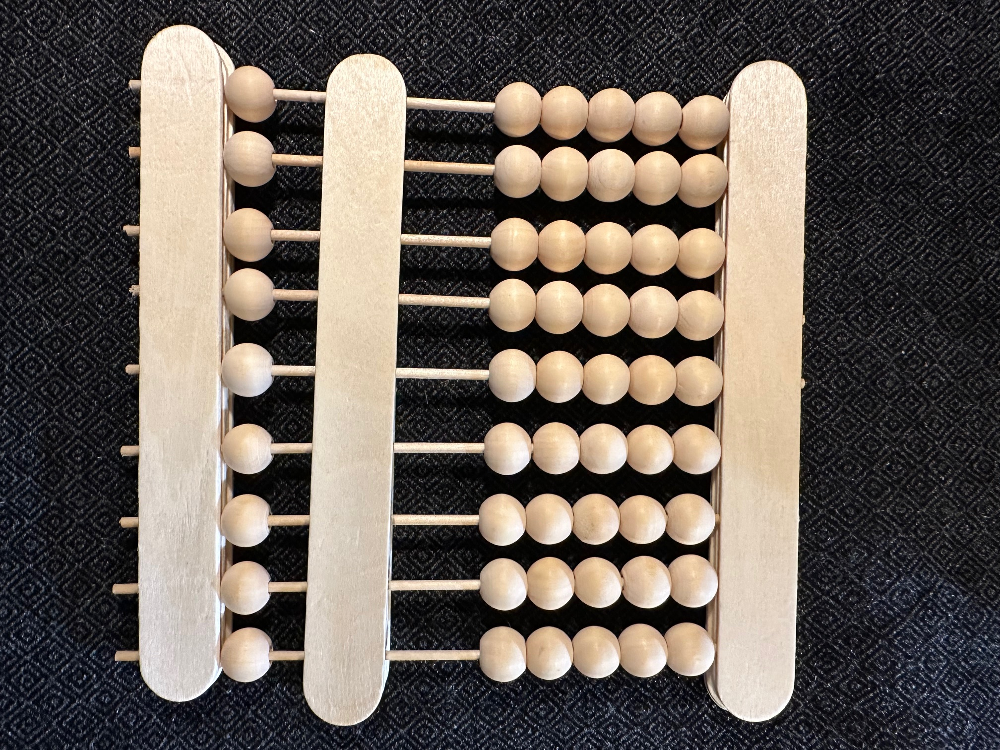
When rods are not single digits
These blank/cleared rods with no active beads can represent the numeral 0 as previously mentioned but they also can be blank rods, we ignore those like we would empty spaces where there is no number or digit.

In this example from earlier the rod with two active beads represents a 2, the leftmost digit of 200, the rods to the left of it are blank rods, those to the right represent 0s.
These full rods allow us to represent numbers more compactly and with fewer 0s. All beads on this rod are active, ten beads by count.

1,111,111,101, a ten-digit number represented compactly on 9 rods.
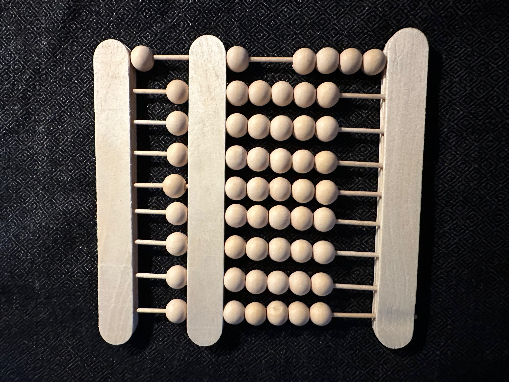
Three different ways to represent 8000, two of these use full rods.
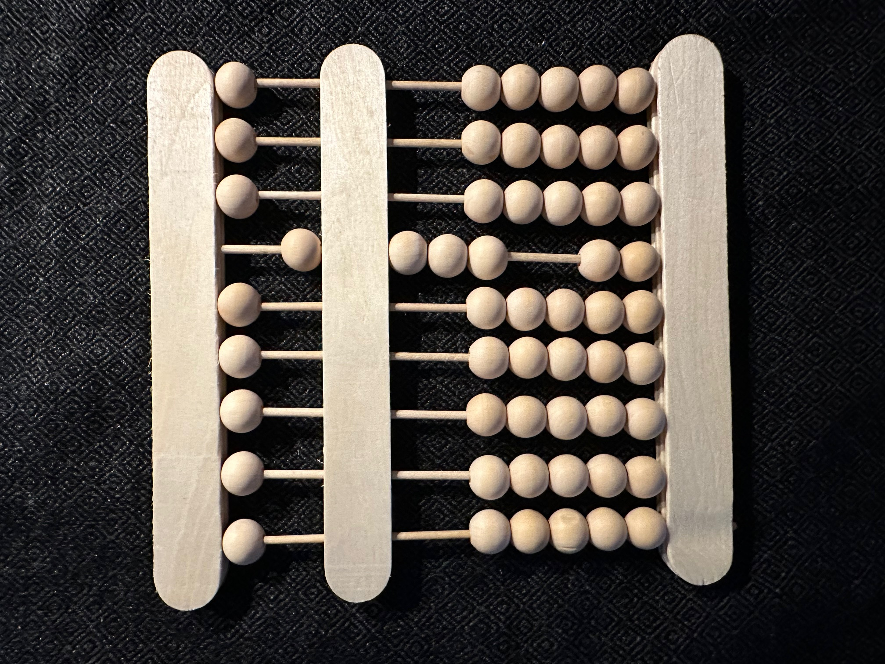
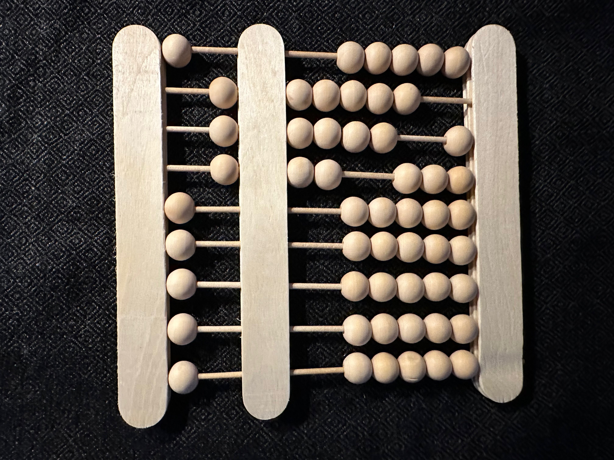
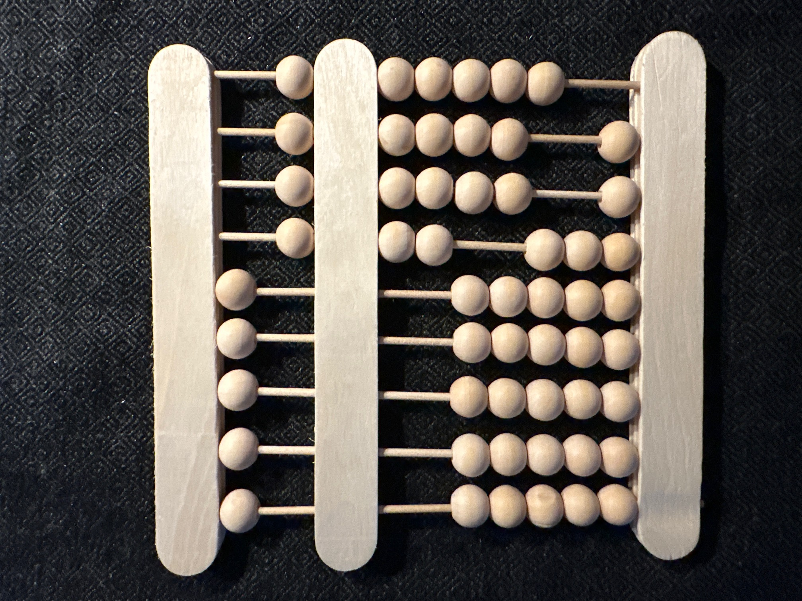
You can represent numbers with a decimal point and a thousands separator. I don't recommend drawing the symbols directly on the frame since it would be hard to take off, so I suggest drawing them on a piece of paper and placing it on top of the middle bar. Left: 123,345.789. The rightmost rod need not be the ones place.
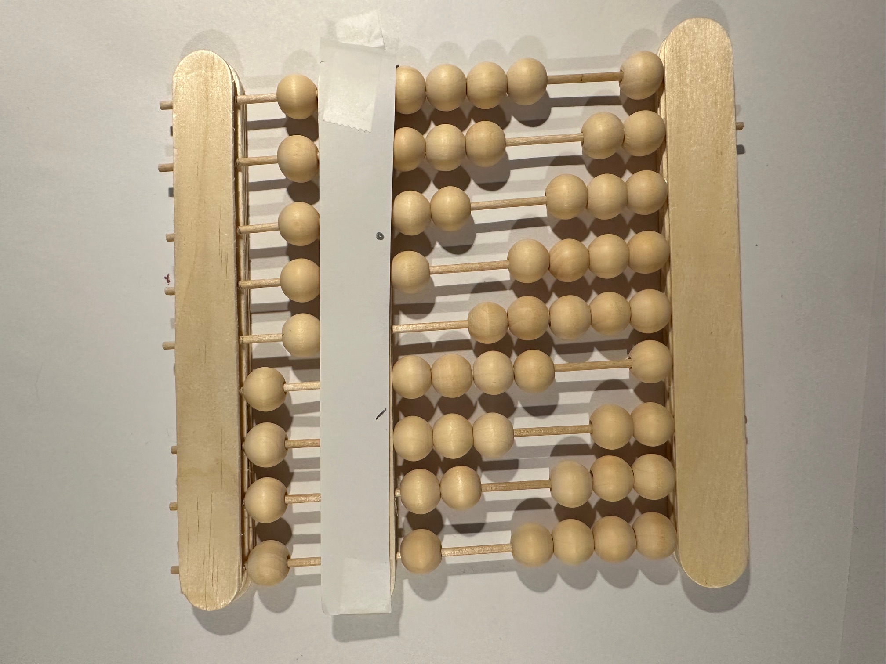
Amounts of things can often be represented multiple ways numerically. If you measure out a length of 9 decimeters 9 centimeters and 10 millimeters you also have 1 meter.
Much like how there are multiple ways to represent a number with beads there are multiple ways to represent numbers with USD.
For example, if you ask a bank teller for $100, you can receive this as one one-hundred-dollar bill or ten tens or nine tens and ten ones or even nine tens, nine ones, and ten dimes.
Making change with cash and regrouping beads on a counting frame give us multiple ways to represent some amounts/numbers.
For example, 100 in cash:
and 100 in beads:
1 $100
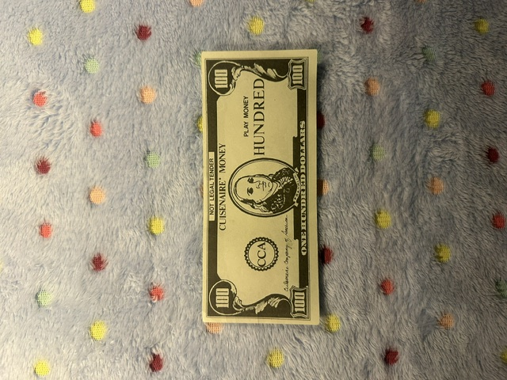
1 bead worth 100
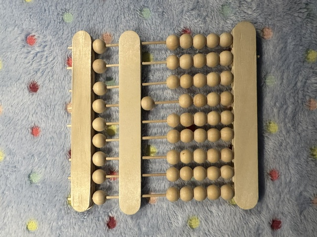
10 $10s
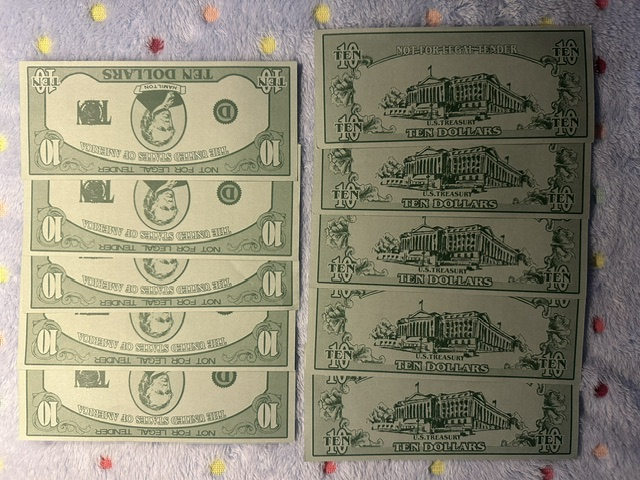
10 beads worth 10
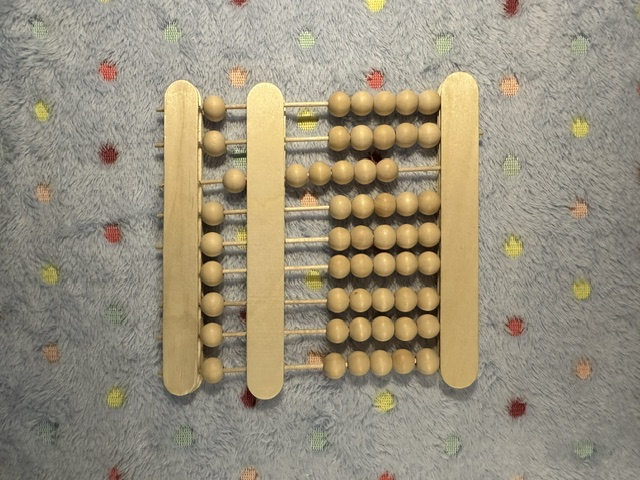
9 $10s and 10 1s
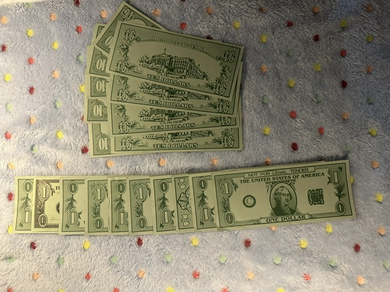
9 beads worth 10 and 10 worth 1
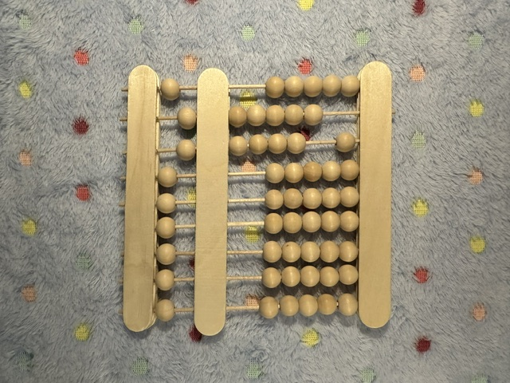
9 $10s, 9 $1s and 10 dimes
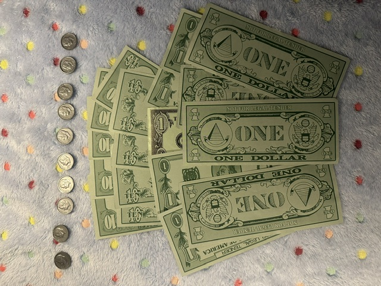
9 beads worth 10, 9 worth 1 and 10 worth 0.1.
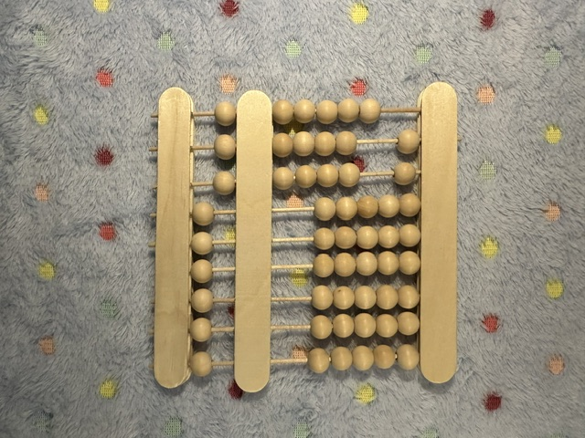
Another way cash math is similar to bead arithmetic
To perform long addition and subtraction you need to use regrouping. Both cash and counting frames provide a physical way of regrouping. With cash we call this "making change". On an abacus we can exchange a bead for the five beads worth 1/10 and one bead worth 1/2 on the rod immediately to the right.
A potential mistake
Comparing numbers represented with cash/beads is more complicated than comparing written whole numbers.
If you have 5 $1 bills and your friend has 4 $1s and 4 quarters you might assume you have more money if you're only counting bills.
Let's say you're comparing two normally written counting numbers, also called positive integers, call them x and y. If x or y has more digits then it's a bigger number. If x and y have the same number/count of digits then you compare them digit by digit, if x or y has a larger digit in the same place then it's larger. Finally, x = y if they have the same digits in the same order. This rule ceases to be absolute when we start dealing with numbers like 0.999... since 1 = 0.999...
The rule given to the left is used for comparing integers/counting numbers. If you try to use it to compare other numbers, like 1 and 0.999... you will only consider the ones place and assume 1 > 0.999... This is an error similar to the mistake made earlier with cash.
Each rod of the abacus has a name/index
From left to right, rod 0, 1, 2, 3, 4, 5, 6, 7, and 8. There is 1 active bead on rod 0 and 9 active beads on rod 8 et cetera.
How are calculations performed on an abacus?
The abacus is like a posable figurine, numbers represented with the beads on the rods correspond to poses. Sequences of these poses can be called dances. Counting frame dances are calculations. Because humans have arms, legs, eyes, etc. our poses/dances involve arms, legs, eyes, etc., whereas the abacus’ dances involve the moveable beads slid into active or inactive positions.
The final pose of an abacus’ dance often gives us the result of a calculation. By observing an abacus’ dance routine, we can learn the steps and result of the computation it corresponds to. As in human or animal dances, moves/gestures/steps are not just motions, going from one pose to some other pose, they serve a purpose within a routine.
The dance analogy is not perfect
Human dances are often very dynamic, with many different parts at opposite ends moving at once: arms, legs, fingers etc. In abacus “dances” only beads on at most 2 adjacent rods are moved each step.
Napier's Bones
For some operations we’re using a modified version of Napier’s Bones, shown right.
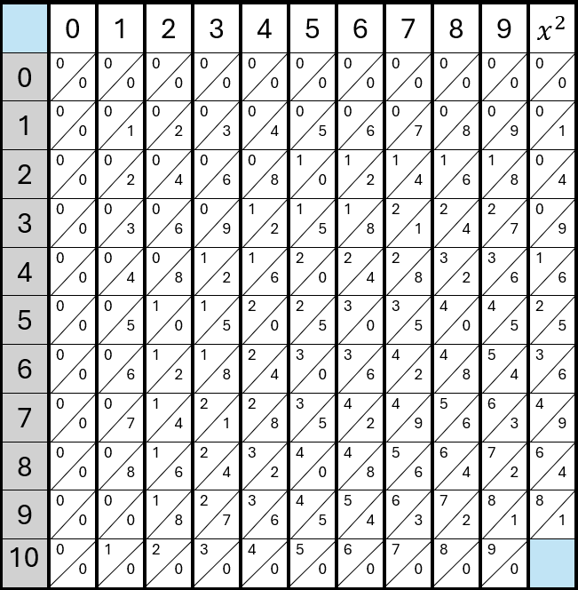
We will be printing out these grids, cutting them into strips and drawing the lattice on them.